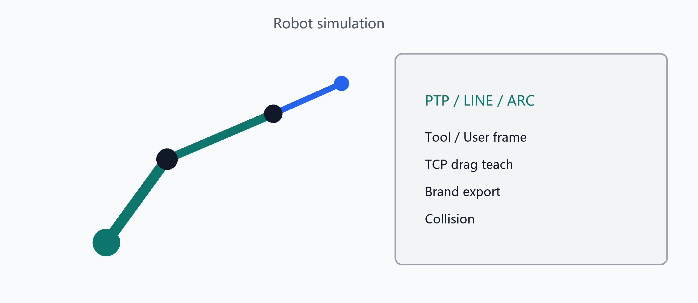

机器人仿真与指令
机器人编程与仿真
指令类型
在仿真指令面板中可添加并编辑常见指令，例如：
- 运动：PTP、直线 LINE、圆弧 ARC（多点示教）
- 逻辑与等待：Wait、If / While
- IO：数字量 / 模拟量
- 路径规划相关指令（PathPlan 等）
操作流程
- 关节点动（Axis）与程序运行 / 停止 / 预览
- 工具坐标系与用户坐标系：从 TCP 捕获、复位等
- TCP 拖拽示教：拖动末端，数值 IK 求解关节角
- 外部轴（如导轨）：配置、搜索与联动回放
- 碰撞检测：开关与规划采样；可写入工程
程序导出与通讯
- 品牌程序导出：ABB、FANUC、AIR、汇川、ROKAE、线加热等（以当前导出器为准）
- 机器人通讯页：经 Bridge 与实机/仿真控制器镜像（ABB / Fanuc / KUKA 等）
- 支持多程序存储；指令编辑可撤销